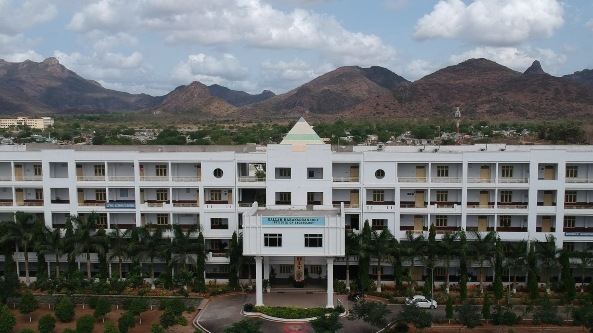

Kallam Haranadhareddy Institute of Technology – Empowering students with accessible academic records.

Founder promoter members of the Society, who are primarily businessmen, believe that the future of India can be built and moulded in classrooms. After careful and meaningful discussions, they established the "KALLAM ACADEMY OF EDUCATIONAL SOCIETY", registered vide Reg. No. 24 of 2006 dated 17-01-2006 under the Andhra Pradesh Societies Registration Act, 35 of 2001.
With an objective to create technically skillful professionals, KALLAM HARANADHAREDDY INSTITUTE OF TECHNOLOGY was established in 2010 at Chowdavaram, located about 10 km from Guntur towards Chilakaluripet on NH-5.
To be a quality-oriented technical institution known for global academic excellence and professional human values; to produce globally competent manpower contributing to the development and welfare of society.
To create educational opportunities for the predominantly agrarian society in and around Guntur; provide an environment conducive to learning; achieve academic excellence; support economically weak students; and establish strong partnerships between institution and industry.
KHIT strongly believes that quality meets success. Our constant endeavor is to achieve global standards and excellence in teaching, research, and consultancy by creating an environment where faculty and students share a passion for creating and applying knowledge.